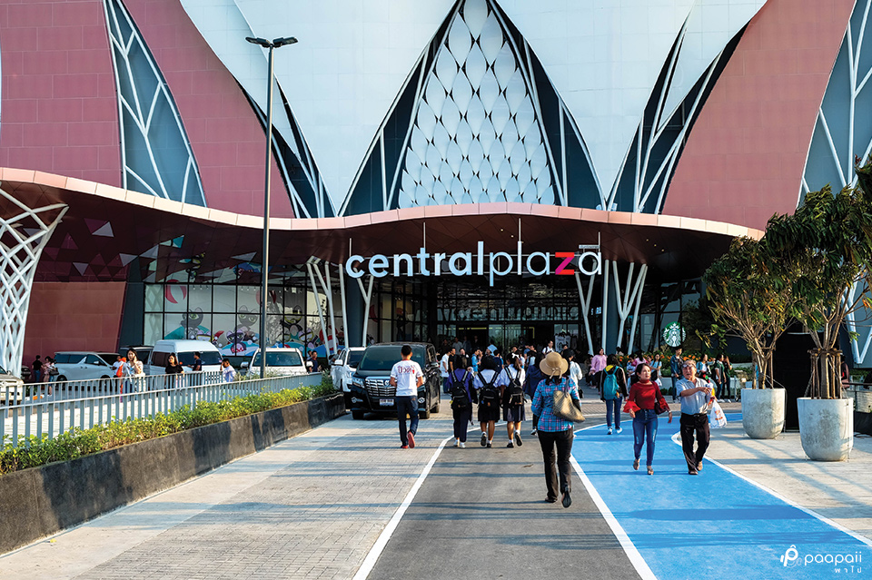

2.1 ห้างเดอะมอลล์โคราช
เดอะมอลล์ โคราช หรือ ศูนย์การค้าเดอะมอลล์ ช็อปปิ้ง เซ็นเตอร์ นครราชสีมา (The Mall Shopping Center Nakhonratchasima)
เปิดบริการวันที่ 10 สิงหาคม พ.ศ. 2543 ยาวนานมาจนถึงปัจจุบัน ซึ่งมีอายุราวๆ 24 ปี ทั้งนี้ เดอะมอลล์ โคราช ถือเป็นศูนย์การค้าในเครือเดอะมอลล์แห่งแรกในต่างจังหวัด
2.2 ห้างเทอร์มินอล 21 โคราช
เป็นศูนย์การค้าขนาดใหญ่แห่งหนึ่งในจังหวัดนครราชสีมา บริหารงานโดย สยามรีเทล ดีเวลอปเมนท์ ภายใต้แนวคิด
"จุดหมายปลายทางแห่งการชอปปิง (World Market Street)" โดยศูนย์การค้าเปิดให้บริการในวันที่ 19 ธันวาคม พ.ศ. 2559 ส่วนโรงแรมจะเริ่มก่อสร้างในระยะต่อไป และศูนย์การค้าตั้งอยู่ตรงข้ามกับบิ๊กซี โคราช

2.3 เซ็นทรัล โคราช
หรือชื่อเดิม เซ็นทรัลพลาซา นครราชสีมา (CentralPlaza Nakhon Ratchasima) เป็นโครงการพัฒนาอสังหาริมทรัพย์ขนาดใหญ่ในจังหวัดนครราชสีมา
ประกอบด้วยศูนย์การค้า โรงแรม และคอนโดมิเนียม มีพื้นที่รวมเฉพาะส่วนศูนย์การค้าใหญ่เป็นอันดับ 3 ของศูนย์การค้าโดยกลุ่มเซ็นทรัล รองจากเซ็นทรัลเวิลด์ และเซ็นทรัล เวสต์เกต ทั้งนี้เซ็นทรัล โคราชได้เปิดให้บริการเป็นครั้งแรกในวันที่ 3 พฤศจิกายน 2560 จนถึงปัจจุบันนี้
